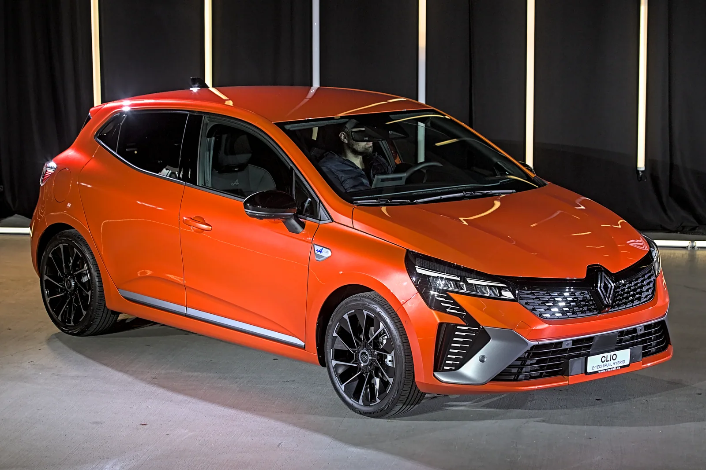

FINITION SÉLECTIONNÉE
Bibliothèque/ Atlas véhicules / Renault
ATLAS VÉHICULES / 01
RENAULT
Clio V
Phase 2 · France 2025
Prenez place à bord de la Clio 5 restylée. Explorez sa carrosserie, son poste de conduite et les versions proposées en France.
La visite Renault Maroc est maintenant intégrée à l’atlas. Extérieur rotatif et habitacle ; les versions France restent comparées ci-dessous.
- Finitions
- 04
- Motorisations
- 05
- Longueur
- 4,053 m

01 / 06
Trois-quarts avant
Crédits photo ↗Esprit Alpine au salon de Zurich, photographiée en 2023.
01 / VUES & PROJECTIONS
Tourner autour.
Passer à bord.
Ouvrir la visite constructeur dans l’atlas ↗
Une représentation détaillée de la carrosserie et de l’habitacle, avec les photographies et versions documentées à portée de main.
Visite 360° officielle dans l’atlas ↗
Clio V restylée MY25. Ouvrez le 360°, puis le volant pour entrer à bord. Les finitions y sont marocaines.
02 / GAMME FRANCE
Quelle Clio ?
Les quatorze configurations particulières au tarif Renault du 1er juillet 2025. Choisissez une finition pour voir les moteurs réellement proposés à cette date.
Comparer les 14 configurations et leurs prix catalogue
Dimensions, teintes et versions professionnelles
03 / DOCUMENTATION RENAULT
La bonne notice.
Renault distingue trois éditions de la notice sur 2025. Vérifiez la période de votre véhicule dans My Renault ou dans ses documents : la seule année d’immatriculation ne suffit pas.